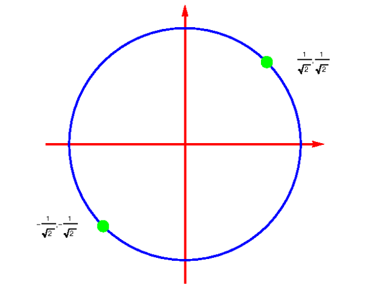

Here is an example of an ordinary differential equation: \[\frac{dy}{dx}+y=\sin x\] ...where \(y\) is an unknown function of the independent variable \(x\). This is a linear equation, as it has no powers of \(y\) or any of the derivatives of \(y\) which are greater than 1. It is also known as a first-order equation as it only features the first derivative and does not feature any high-order derivatives. This is an example of a non-linear equation \[x\frac{d^2y}{dx^2}+\sin x=y^2-\left(\frac{dy}{dx} \right)^2\] ...in which \(y\) and/or one or more of its derivatives are raised to some power other than 1. Non-linear differential equations are often difficult to solve (if greater than first order). In these cases approximate numerical solutions can often be found using a computer. Our example here is also a second-order equation, as the highest order derivative it features is the second derivative. The order of the DE is given by the highest order derivative in the equation, e.g: \[4\frac{d^3y}{dx^3}-\frac{d^2y}{dx^2}+4=y+e^{3x}\] ...is an example of a third-order linear equation.
ODEs have a general solution, which will feature some unknown constants. The number of constants will be equal to the order of the equation e.g. the solutions to second-order ODEs always have two unknown constants. We can see this from the following simple example. \[\frac{dy}{dx}=x^2\] \[\int\frac{dy}{dx}dx=\int x^2dx\] \[\implies y(x)=\frac{1}{3}x^3+C\] ...where C is an arbitrary constant. This is the general solution of the equation. If you had a second-order ODE, you would need to integrate twice in order to solve it which implies you would need two unknown constants of integration; if you had a third-order ODE then three integrations would be needed giving three unknown constants, and so on. This is not a formal proof, but it illustrates the general principle. A particular solution is obtained from the general solution by giving the integration constants specific values. These unknown constants are fixed by Initial Conditions and/or Boundary Conditions:
It follows that to find a particular solution to a second-order ODE requires two initial or boundary conditions to determine the two unknown constants.
A first-order ODE is separable if it can be written in the form: \[f(y)\frac{dy}{dx}=g(x)\] ...as it follows that \[\int f(y)dy=\int g(x)dx\] In this case all \(x\) and \(dx\) terms can be written on one side and all \(y\) and \(dy\) terms can be written on the other. The technique is referred to as “separation of variables”. Once the ODE has been rearranged into the form above both sides can simply be integrated to find \(y(x)\).
A function \(f(x,y)\) is homogeneous of degree \(n\) if: \[f(\lambda x,\lambda y)=\lambda^nf(x,y)\] Example \[f(x,y)=x^2+y^2\] \[f(\lambda x,\lambda y)=\lambda^2x^2+\lambda^2y^2\] \[=\lambda^2f(x,y)\] So this function is homogeneous of degree 2. Expanding on this, a first-order ODE is homogeneous if it can be written: \[\frac{dy}{dx}=\frac{g(x,y)}{h(x,y)}\] where \(g\) and \(h\) are both homogenous of the same degree. To solve these types of ODE's, we use the substitution \[y(x)=\nu(x)x\] ...we can expand using the product rule and simplify to generate a separable equation. Example Find the G.S. of the equation: \[\frac{dy}{dx}=\frac{x^2+y^2}{xy}\] Solution: \[\frac{(d\nu x)}{dx}=\frac{x^2+\nu^2x^2}{x\cdot\nu x}\] \[x\frac{d\nu}{dx}+\nu=\frac{1}{\nu}+\nu\] \[x\frac{d\nu}{dx}=\frac{1}{\nu}\] Then use separable method.
In general first-order linear ODE's have the form: \[\frac{dy}{dx}+P(x)y=Q(x)\] The LHS is linear in the function \(y(x)\) and its derivative. This is not generally true of separable or homogeneous first-order equations. To solve an equation of this form we can multiply both sides by an Integrating Factor \(I(x)\). The Integrating Factor \(I(x)\) is given by: \[I(x)=e^{\int P(x)dx}\] Using this definition, it will turn out that the equation can then be written as \[\frac{d}{dx}(Iy)=IQ\] ...thus \[y=\frac{\int IQ\;dx}{I}=\frac{\int e^{\int P(x)dx}Q\;dx}{e^{\int P(x)dx}}\]
In general, a second-order linear ODE has the form \[a\frac{d^2y}{dx^2}+b\frac{dy}{dx}+cy=f(x)\] Where \(a,b,c\) are constants and \(a\neq 0\) For conciseness, we will write this as: \[ay''+by'+cy=f(x)\] If the function \(f(x)=0\), then the second-order ODE is homogeneous, else it is inhomogeneous. Note that this is a completely different use of the word “homogeneous” from its previous use in the discussion of first-order differential equations!
To understand how to solve a second-order linear differential equations we will need to use the principle of superposition. Suppose that functions \(y_1\) and \(y_2\) are solutions of a homogeneous linear differential equation of any order (1st, 2nd, ... ). Then any linear combination of \(y_1\) and \(y_2\) must also be a solution. I.e: \[y=Ay_1(x)+By_2(x)\] ...is also a solution, where \(A\) and \(B\) are constants. This follows because \(y_1\) and \(y_2\) both give zero on substituting into the equation (they are solutions of the homogeneous equation), therefore, as long as the ODE is linear, \(y\) will also give zero on substituting into the equation. Therefore \(y\) is also solution.
Consider the homogeneous equation \[ay''+by'+cy=0\] The solution to the homogeneous equation is called the complementary function (CF). The complementary function can be found by trying a trial solution. Using our mathematical intuition we guess that the solution will have the form: \[y(x)=e^{\lambda x}\] where \(\lambda\) is an unknown constant. This implies that: \[\frac{dy}{dx}=\lambda e^{\lambda x}\quad\&\quad\frac{d^2y}{dx^2}=\lambda^2e^{\lambda x}\] We can substitute these back into the equation and then simplify to get: \[a\lambda^2+b\lambda+c=0\] This equation is known as the auxiliary equation or characteristic equation. There are three possible solutions of the auxiliary equation.
The corresponding general solutions, which must always have 2 unknown constants, are:
\[y=Ae^{\lambda_1x}+Be^{\lambda_2x}\]
\[y=(A+Bx)e^{\lambda_1x}\]
\[y=e^{px}(C\cos qx+D\sin qx)\] ...where: \[p=-\frac{b}{2a}\quad\&\quad q=\frac{\sqrt{4ac-b^2}}{2a}\] ...and \(C\) and \(D\) are arbitrary constants.
Consider the inhomogeneous equation: \[ay''+by'+cy=f(x)\] Where \(a,b,c\) are constants and \(a\neq 0\) The general solution to the inhomogeneous equation is the sum of the general solution of the homogeneous equation (the complementary function) plus any solution to the inhomogeneous equation. The solution to the inhomogeneous equation is called the particular integral (PI) (also sometimes known as the particular solution. The sum of these two solutions is the general solution to the inhomogeneous equation. I.e. if the solution to the homogeneous equation is \(y_{CF}\) and the solution to the inhomogeneous part of the equation is \(y_{PI}\) then the general solution is given by \[y_{GS}=y_{CF}+y_{PI}\] Example Find the general solution to: \[y''+3y'+2y=2e^{5x}\] Solution: First we must solve the homogenous equation \[y''+3y'+2y=0\] The aux equation is: \[\lambda^2+3\lambda+2=0\] ...Which yields roots, \(\lambda_1=-1\;\&\;\lambda_2=-2\) Therefore the complementary function is: \[y_{CF}=Ae^{-x}+Be^{-2x}\] We next need to find any solution of the inhomogeneous equation. It doesn’t have to be the most general possible. This could be found by any method, we could even just guess a solution. However, in the following we will do this more systematically. We will use a trial solution chosen according to rules based on the form of \(f(x)\). This approach is also called the ‘method of undetermined coefficients’. This has the following rules:
So for our example let us try: \[\begin{align} y&=ke^{5x}\\ \implies y'&=5ke^{5x}\\ \implies y''&=25ke^{5x}\\ \end{align}\] We can substitute these into the original question to find that: \[k=\frac{1}{21}\] Therefore the Particular Integral is: \[y_{PI}=\frac{1}{21}e^{5x}\] Thus the general solution is \[y=Ae^{-x}+Be^{-2x}+\frac{1}{21}e^{5x}\]
A sequence is an ordered list of elements \(a_r\), which can be written as: \[\left\{a_r\right\}^n_{r=1}=\left\{a_1,a_2,...,a_n\right\}\] A series is formed by the summation of the terms in a sequence. This is shown with the Greek letter sigma: \[\sum^N_{r=1}a_r\] An infinite series is the sum of an infinite number of terms: \[\sum^\infty_{r=1}a_r=a_1+a_2+a_3+\ldots\] The partial sum, \(S_n\), is the sum of the first n terms in a sequence: \[\sum^n_{r=1}a_r=a_1+a_2+\ldots+a_n\]
A general arithmetic sequence has terms \(a_r\) which differ by a constant \(s\): \[a_{r+1}=a_r+S\] Therefore, assuming the first term is \(a_0\) we obtain: \[a_r=a_0+r\cdot s\] An arithmetic series is a sum of the terms of an arithmetic sequence: \[\sum^{N-1}_{r=0}a_r=\sum^{N-1}_{r=0}(a_0+r\cdot s)\] Therefore, in general: \[\sum^{N-1}_{r=0}(a_0+r\cdot s)=Na_0+\frac{N(N-1)}{2}s\] or equivalently \[\sum^{N-1}_{r=0}(a_0+r\cdot s)=\frac{N}{2}(2a+(N-1)s)\]
A geometric sequence has terms \(a_r\) such that consecutive terms have the same ratio: \[q=\frac{a_{r+1}}{a_r}\] where \(q\) is called the common ratio. Assuming we’ve labelled the term in the sequence such that the first term is \(a_0\) then \(a_r\) is of the form: \[a_r=a_0q^r\] A geometric series is the sum of the terms of a geometric sequence: \[S_N=\sum^{N-1}_{r=0}a_r=a_0\sum^{N-1}_{r=0}q^r\] Conveniently, this can be written in the compact form: \[S_N=\frac{a_0(1-q^N)}{1-q}\] ...as long as \(q\neq 1\)
An infinite series is convergent if its nth partial sum tends to a constant value as \(n\to\infty\). Otherwise the series diverges. As we will see, the sum does not have to be infinite to be defined as divergent; it is enough that it doesn’t tend to a constant. Here we apply the concept of convergence to the geometric series introduced in the preceding section. Case 1: \(-1\lt q\lt 1\) In this case: \[\lim_{n\to\infty}q^n\to 0\] Therefore: \[\lim_{n\to\infty}S_n=\lim_{n\to\infty}a_0\frac{1-q^n}{1-q}\to a_0\frac{1}{1-q}\] ...So the geometric series converges to: \[\frac{a_0}{1-q}\] Case 2: \(q=1\) Since we can't use the simplified sum as \(q=1\), we do the summary directly. \[S_n=\sum^{n-1}_{r=0}a_0(1)^r=a_0n\] Therefore the series diverges (to \(+\infty\)) as \(n\to\infty\) Case 3: \(q \gt 1\) We can rewrite our expression for the partial sum to make the behaviour a little clearer: \[S_n=a_0\frac{1-q^n}{1-q}=a_0\frac{q^n-1}{q-1}\] Since \(q^n\) increases as \(n\) increases, we obtain: \[\lim_{n\to\infty}S_n=\frac{a_0q^n}{q-1}\to\infty\] Therefore the series diverges (to \(+\infty\)) as \(n\to\infty\) Case 4: \(q\lt -1\) Consider our usual expression for the partial sum \[S_n=a_0\frac{1-q^n}{1-q}\] Clearly \(q^n\) is positive for all even \(n\), but negative for all odd \(n\) and hence the series diverges and oscillates as \(n\to\infty\) Case 5: \(q=-1\) Hence: \[S_n=a_0\frac{1-(-1)^n}{2}\] Here as \(n\to\infty\), \(S_n\) oscillates between \(a_0\) and \(0\). Summary:
First we introduce, a simple test for divergence:
For a series to converge, \(a_r\) must tend to zero as \(r\to\infty\). Otherwise it must diverge to \(\pm\infty\) or diverge by oscillation. Note that this is only a necessary condition for convergence; it is not a sufficient condition. A series could still diverge even if \(a_r\to 0\) as \(r\to\infty\) (as we will see). So, this test only tells us whether a given series either definitely diverges or might converge.
In situations where partial sums cannot easily be calculated, we can perform various tests to determine whether a series converges or diverges. For simplicity, we are only going to look at the case of absolute convergence where for a series of the form: \[\sum^\infty_{r=r_0}a_r\] ...we consider only whether: \[\sum^\infty_{r=r_0}|a_r|\] ...converges or not. If the sum of the absolute values converges then the original series must also converge. The tests we’ll consider are:
We create the limit such that: \[L=\lim_{r\to\infty}\left|\frac{a_{r+1}}{a_r}\right|\] The ratio tests states that:
We create the limit such that: \[L=\lim_{r\to\infty}\sqrt[r]{|a_r|}\] The root test states that:
Let \(a_r=f(r)\) for integer \(r\). For the series: \[\sum^\infty_{r=r_0}f(r)\] If the integral: \[\int^\infty_{r_0}f(x)dx\] is finite, then the series converges. Otherwise it diverges.
A power series is a series, \(P(x)\), in powers of \((x − a)\), where \(a\) is a constant, such that: \[P(x)=c_0+c_1(x-a)+c_2(x-a)^2+c_3(x-a)^3+\ldots\] where \(c_0\), \(c_1\), \(c_2\), etc. are constants.
The radius of convergence, \(R\), of a power series is defined as the largest value of \(|x-a|\), for which the power series converges. I.e. the series converges for all values of \(x\) such that: \[|x-a|\lt R\] and the series diverges for all values of \(x\) such that: \[|x-a| \gt R\] The interval in \(x\) for which a power series converges is called the interval of convergence: \[-R\lt x-a\lt R\implies a-R\lt x\lt a+R\] The radius of convergence can usually be determined by applying the ratio test. i.e. if: \[\lim_{r\to\infty}\left|\frac{a_{r+1}}{a_r}\right|\lt 1\] then the series is convergent. Since \(a_r\) depends on \(x\), this will determine a range of \(x\) for which the power series converges. Convergence in the case where \(|x−a|=R\) cannot be determined by the ratio test and has to be evaluated by other methods. Example: Radius of Convergence \[L=\lim_{r\to\infty}\left|\frac{a_{r+1}}{a_r}\right|=2|x+2|^2\] \[L\lt 1\quad\therefore\quad2|x+2|^2\lt 1\] \[\implies |x+2|\lt \frac{1}{\sqrt{2}}\] \[\implies R=\frac{1}{\sqrt{2}}\] Hence, the interval of convergence is: \[-\frac{1}{\sqrt{2}}\lt x+2\lt \frac{1}{\sqrt{2}}\]
The Taylor series of a function \(f(x)\) about the point \(x=a\) is given as: \[f(x)=\sum^\infty_{n=0}\frac{f^{(n)}(a)}{n!}(x-a)^n\] The formula to find the Taylor polynomial of a given function is the following: \[P_N(x)=\sum^N_{n=0}\frac{f^{(n)}(a)}{n!}(x-a)^n\] As long as the series converges (which depends on \(x\)), it will exactly reproduce the function \(f(x)\). i.e. the Taylor series equals \(f(x)\) on its interval of convergence. We can determine this interval by using our previous tests for convergence. When the point \(a\) is equal to \(0\) (The approximation is around the origin), we derive the Maclaurin series: \[f(x)=\sum^\infty_{n=0}\frac{f^{(n)}(0)}{n!}x^n\]
The Taylor series of: \[f(x)=(1+x)^r\] ...about \(x=0\) is called the binomial series. It is found to be: \[(1+x)^r=1+rx+r(r-1)\frac{x^2}{2!}+r(r-1)(r-2)\frac{x^3}{3!}+\ldots\] The binomial series converges if \(|x|\lt 1\). You can check for yourself using the ratio test.
The first-order approximation to \((1+x)^r\) is: \[(1+x)^r\approx 1+rx\] This is known as the binomial approximation. It is a good approximation if \(|x|\) is small enough compared to \(1\).
Find the maxima and minima of the function: \[f(x,y)=x+y\] subject to the constraint \[x^2+y^2=1\] This is an example of a general class of problem, where we have a function \(f(x_i)\) of variables \(x_i,\;i=1,2,\ldots,n\) and we need to find the stationary points of \(f(x_i)\), subject to a set of up to \(n−1\) (holonomic) constraints. Holonomic constraints are constraints which can always be written in the form \(g_a(x_i)=0\), \(a=1,2,\ldots,n−1\). Note that there could be fewer than \(n−1\) constraints, but not more. In the above example: \[f(x_i)=f(x,y)=x+y\] \[g(x_i)=g(x,y)=x^2+y^2-1\] To solve this problem using the method of Lagrange multipliers we introduce a new function \(F(x_i,\lambda_a)\) where: \[F(x_i, \lambda_a)=f(x_i)+\sum_{a=1}\lambda_ag_a(x_i)\] and find the stationary points (i.e. points with first derivatives equal to zero) with respect to \(x_i\) and \(\lambda_a\) The \(\lambda_a\) are the Lagrange multipliers (LM). Here we have one constraint, so we only need one LM. \[F(x,y,\lambda)=f(x,y)+\lambda g(x,y)=x+y+\lambda(x^2+y^2-1)\] To find the stationary points, we need to solve: \[\begin{align} \frac{\partial F}{\partial x}=0\\ \frac{\partial F}{\partial g}=0\\ \frac{\partial F}{\partial\lambda}=0 \end{align}\] These give: \[\begin{align} &\frac{\partial F}{\partial x}=1+2\lambda x=0\\ &\frac{\partial F}{\partial g}=1+2\lambda y=0\\ &\frac{\partial F}{\partial\lambda}=x^2+y^2-1=0 \end{align}\] Therefore: \[x=-\frac{1}{2\lambda}\quad\&\quad y=-\frac{1}{2\lambda}\] Hence: \[x=y\] Using \(x^2+y^2-1=0\), we find that: \[x=\pm\frac{1}{\sqrt{2}}\quad\&\quad y=\pm\frac{1}{\sqrt{2}}\] So the stationary points are: \[(x,y)=\left(\frac{1}{\sqrt{2}},\frac{1}{\sqrt{2}}\right)\quad\&\quad\left(-\frac{1}{\sqrt{2}},-\frac{1}{\sqrt{2}}\right)\] These give the maximum and minimum of \(x+y\) on the unit circle \(x^2+y^2=1\) as shown below

NOTE: You cannot take the second derivative of these stationary points to classify them, you must either use your knowledge of the function, or find the height of the function on both sides of the points.